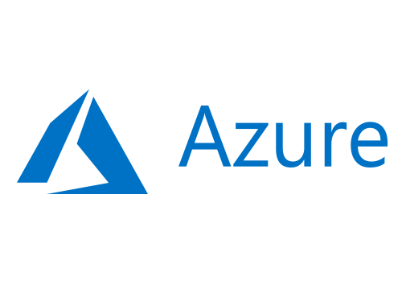

(Optional) An Azure account. If you don’t have one, you can create one. Just click on the image!!! You’ll need this if you want to upload your function to your Azure Portal.
Something more than a mere computer without an event-based server
Azure Functions is a solution for running relatively small pieces of code in the cloud. As I said previously, the only thing you have to worry about when using Azure Functions is writing code to solve your problems, nothing else. You can do it in C#, Node.js, PHP, Python and more, and you can use NuGet or NPM to manage your dependencies, it’s not so different from what you’d normally do to develop an application. Azure scales out and down when needed so you only pay for the time your code runs and supports continuous integration.
(Optional) An Azure account. If you don’t have one, you can create one. Just click on the image!!! You’ll need this if you want to upload your function to your Azure Portal.

You need to have Docker installed in your computer. It’s not necessary to use Azure Functions but I’ll use it in this tutorial. I have installed Docker Community Edition, you can download it here for free, the installation process is simple so I won’t go into details about it. Note: It only runs on Windows 10 Pro or Enterprise Edition.
Azure Functions is a solution for running relatively small pieces of code in the cloud. sAs I said previously, the only thing you have to worry about when using Azure Functions is writing code to solve your problems, nothing else. You can do it in C#, Node.js, PHP, Python and more, and you can use NuGet or NPM to manage your dependencies, it’s not so different from what you’d normally do to develop an application. Azure scales out and down when needed so you only pay for the time your code runs (see more) and supports continuous integration. You can learn more about it here; However, it won’t be necessary to follow this tutorial.
Docker is a tool that lets you create, deploy, and run applications by using containers. Containers allow you to package up your applications with all of the parts it needs, such as libraries and other dependencies, and ship it all out as one package, so you can take for granted that it’ll work on other machines disregarding its configuration. In this tutorial we are going to run Azure Functions inside a Docker container.
If you got here, it means you have everything you need to start so let’s get started!